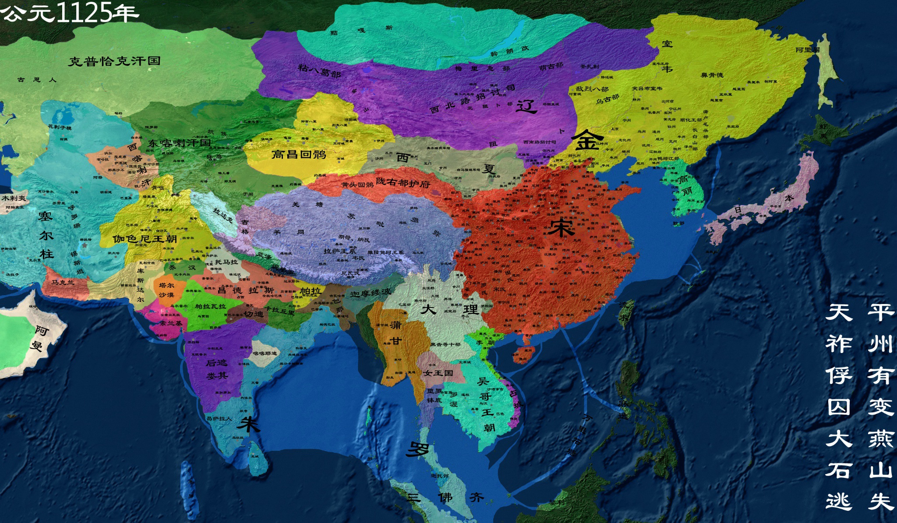

宋朝
宋朝（公元960年—公元1279年）是中国历史上上承五代十国下启元朝的朝代，分北宋和南宋两个历史阶段，共十八帝，享国三百一十九年。 宋朝是中国古代历史上商品经济、文化教育、科学创新高度繁荣的时代，著名史学家陈寅恪：“华夏民族之文化，历数千载之演进，造极于赵宋之世。”
【相关人物】
[赵匡胤]
[韩世忠]
[岳飞]
[寇准]
.......
[更多人物]
【相关书籍】
[宋词三百首]
[回味宋朝]
[咸平之治]
.......
[更多书籍]

公元960年赵匡胤建国，北宋建立
公元960年，公元十世纪六十年代的第一年。北宋建隆元年。此年正月，后周都点检赵匡胤发动政变，建立宋朝，史称“陈桥兵变”。
公元961年 杯酒释兵权
杯酒释兵权是指发生在北宋乾德年间，宋太祖赵匡胤为了加强中央集权，避免下属将领也被迫“黄袍加身”，起兵篡夺新生政权，通过酒宴方式，威胁利诱，要求高级将领交出兵权的历史事件。 杯酒释兵权是宋太祖为加强中央集权，巩固统治所采取的一系列政治军事改革措施的开始，被视为宽和典范。其后，宋太祖还在军事制度方面进行了多项改革，大大强化了北宋中央集权。 后来，“杯酒释兵权”演变为一个成语，引申为轻而易举解除将领兵权。
公元986年 宋辽大战
宋辽战争，一般是指自979年宋朝北伐以来，终于1004年宋辽订立澶渊之盟的一系列宋辽间以燕云地区领地争端为主的长期战争。 最终宋辽双方约为兄弟之国，结束了25年宋辽战争。百年后金朝建立，宋徽宗与金太祖订立海上之盟，于1122年派童贯、种师道、刘延庆率军联合金朝攻打辽南京，未能成功。
公元1004年 澶渊之盟
澶（chán）渊之盟是北宋和辽国，在经过二十五年的战争后缔结的盟约。 公元1004年秋（宋真宗景德元年），辽国萧太后与辽圣宗，亲率大军南下深入宋境。有的大臣主张避敌南逃，宋真宗也想南逃，因宰相寇准的力劝，才至澶州督战。宋军坚守辽军背后的城镇，又在澶州（河南濮阳）城下以八牛弩射杀辽将萧挞览（一作凛）。辽由于自身原因，很早就通过降辽旧将王继忠与北宋朝廷暗通关节。宋真宗也赞同议和，派曹利用前往辽营谈判，于十二月间（1005年1月）与辽订立和约
公元1069年 王安石变法
王安石变法是宋神宗时期，王安石发动的旨在改变北宋建国以来积贫积弱局面的一场社会改革运动。变法自熙宁二年（1069年）开始，至元丰八年（1085年）宋神宗去世结束，故亦称熙宁变法、熙丰变法。 王安石变法以发展生产，富国强兵，挽救宋朝政治危机为目的，以“理财”、“整军”为中心，涉及政治、经济、军事、社会、文化各个方面，是中国古代史上继商鞅变法之后又一次规模巨大的社会变革运动。
公元1084年 资治通鉴
《资治通鉴》（常简作《通鉴》）是由北宋司马光主编的一部多卷本编年体史书，共294卷，历时19年完成。主要以时间为纲，事件为目，从周威烈王二十三年（公元前403年）写起，到五代后周世宗显德六年（公元959年）征淮南停笔，涵盖16朝1362年的历史。
公元1101-1125年 清明上河图
清明上河图，中国十大传世名画之一。为北宋风俗画，北宋画家张择端仅见的存世精品，属国宝级文物，现藏于北京故宫博物院。 清明上河图宽24.8厘米、长528.7厘米，绢本设色。作品以长卷形式，采用散点透视构图法，生动记录了中国十二世纪北宋都城东京（又称汴京，今河南开封）的城市面貌和当时社会各阶层人民的生活状况，是北宋时期都城汴京当年繁荣的见证，也是北宋城市经济情况的写照。
公元1127年 靖康之变
靖康之变是指靖康二年（金天会五年，1127年）金朝南下攻取北宋首都东京，掳走徽、钦二帝，导致北宋灭亡的历史事件。 又称靖康之乱、靖康之难、靖康之祸。
公元1127年 南宋建立
南宋（1127－1279年），中国历史上的朝代，北宋覆亡后，赵构在南京应天府（今河南商丘）称帝， 与北宋统称为宋朝，共传五世九帝，享国一百五十二年。
公元1142年 岳飞遇害
岳飞（1103年3月24日—1142年1月27日），字鹏举，相州汤阴（今河南省汤阴县）人。南宋时期抗金名将、军事家、战略家、民族英雄、书法家、诗人，位列南宋“中兴四将”之首。
公元1278年 文天祥被捕
文天祥（1236年6月6日-1283年1月9日），初名云孙，字宋瑞，又字履善。道号浮休道人、文山。江西吉州庐陵（今江西省吉安市青原区富田镇）人，南宋末政治家、文学家，爱国诗人，抗元名臣、民族英雄 ，与陆秀夫、张世杰并称为“宋末三杰”。
公元1279年 元灭南宋
忽必烈灭宋之战是元世祖灭南宋统一全中国的战争。1268年元世祖发起元灭宋之战，首先派刘整与阿术率军攻打襄阳，史称襄樊之战。元军陆续攻下华南各地，1278年南宋朝廷退至广东崖山。隔年3月，张弘范在崖山海战攻灭南宋海军，陆秀夫挟持8岁的小皇帝宋幼主赵昺投海而死，南宋亡。元朝统一中国地区，建立我国历史上第七个封建正统皇朝。